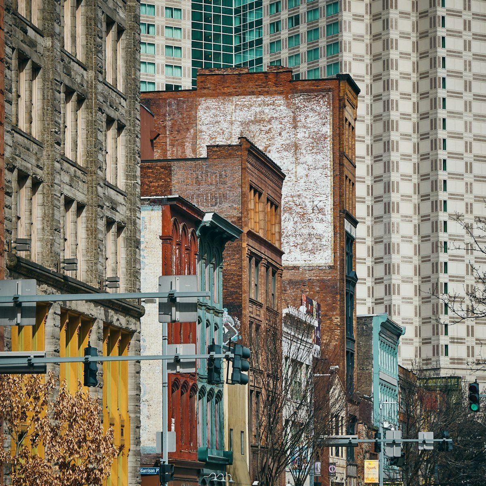

Photo Gallery
Nature, city scenes and details. These sample photographs are by the photographers credited below.

A path between trees in warm sunlight.

Still water surrounded by forest and mountains.

A view across the buildings of Manhattan.

Old and new buildings in Pittsburgh.

The branching veins of a green leaf.
A close look at blue and purple flower petals.
Photo credits
Images are used under the Unsplash License.
- Forest Path: Lukasz Szmigiel
- Mountain Lake: Luca Bravo
- City Skyline: Sam Trotman
- City Buildings: Vidar Nordli-Mathisen
- Leaf Detail: Vadim Gromov
- Flower Detail: Markus Spiske